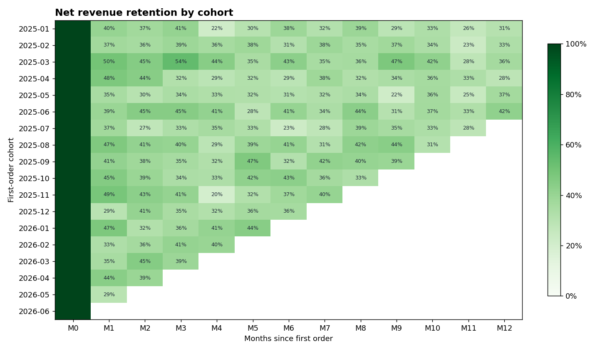

01 · DATA CLEANING & ASSIGNMENT
Client master data, subscription status and account-manager assignment
Several sources record the same clients in different formats. The system turns them into one trusted
client list that drives assignment and subscription tracking.
BEFORE
- Export each source
- Paste into one sheet
- Lookup by hand
- Assign owners manually
Same client under several names · mixed formats · duplicates counted twice
AFTER
- Ingest all sources
- Standardize names, dates, currency
- Deduplicate
- Status timeline: new · active · churned · reactivated
- Rule-based assignment within capacity
- Master list + quality report
10624
real clients (name variants merged)
340
payments booked in the wrong month
240
clients split across several owners
02 · SUBSCRIPTION & RETENTION TRACKING
Cohort retention with automatic refresh validation
Retention and net revenue retention per first-purchase cohort. Every refresh is checked against the previous
snapshot, and each changed number is explained.
BEFORE
- Rebuild cohort table
- Compare two versions by eye
- Ask around why numbers moved
Old cohorts change silently · no audit trail
AFTER
- Pull latest snapshot
- Assign cohort & age
- Customer & revenue retention
- Diff vs previous snapshot
- Attribute each change to a cause
- Heatmaps + change log
by eye100%
changed cells explained automatically
< 1 s
to validate a full refresh
Show chart

Full version with SMB / Enterprise split, n8n scheduling and a Slack pulse:
saas-cohort-retention
03 · QUERY OPTIMIZATION
Making a slow analytics query fast, without changing its answer
The same question answered three ways on millions of rows. A faster version is only accepted when it returns identical results.
BEFORE
- Function on filter column
- Full table scan
- Slow / time-out dashboard
AFTER
- Profile the query
- Index-friendly filter
- Pre-aggregated table
- Result-equality check
- Fast dashboard
~600 ms8–20 ms
query time (30–75x faster)
identical
results checked on every run
04 · DAILY CHANGE ALERT
From “the number went down” to “here is who moved it”
A scheduled job compares today with a fair baseline, names the biggest contributors and flags anomalies,
then posts a ready-to-read message to the team channel.
BEFORE
- Daily total posted
- Team asks why
- Analyst digs manually
AFTER
- Scheduler
- Same-weekday baseline
- Rank top movers
- Anomaly rule
- Chat message
05
contributors named per message
02
planted anomalies caught
Full version for recurring revenue (new / upgrade / downgrade / churn, n8n, Slack thread):
revenue-change-tracker
05 · LEAD RE-ENGAGEMENT
Prioritized follow-up instead of blasting everyone
Lead events are rebuilt into one journey per lead. Leads that went cold or were lost are scored and given a suggested message.
BEFORE
- Export all non-buyers
- Blast the same message
AFTER
- Event log
- Journey per lead
- Status & channel quality
- Score
- Ranked list + message
1330
leads returning per 300 contacts (2.4x, simulated)
Show chart

06 · TEXT CLASSIFICATION
Rules first, LLM for the hard cases
Free-text feedback is sorted into topics. Clear cases are handled by explainable rules; ambiguous ones are
routed to an LLM with a fixed rubric instead of being guessed.
BEFORE
- First keyword wins
- Silent mistakes
AFTER
- Rule scoring
- Confident?
- No → LLM with rubric
- Evaluate vs labels
- Topic report
77%94%
accuracy on rule-decided cases
16%
ambiguous cases routed, not guessed